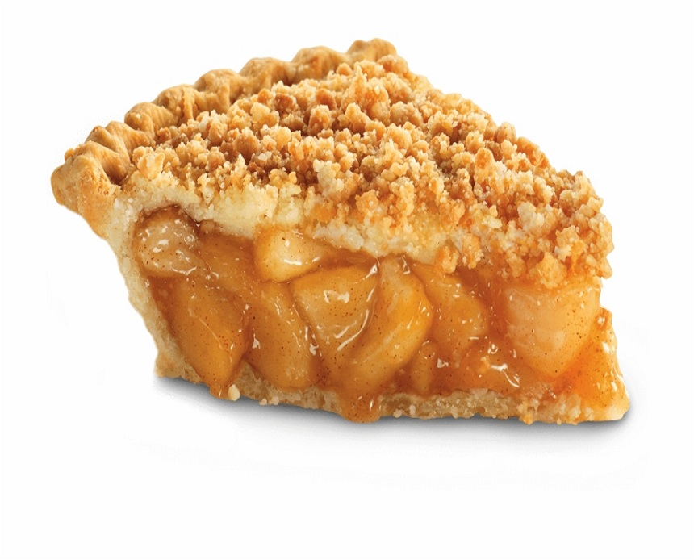

A tart is a baked dish consisting of a filling over a pastry base with an open top not covered with pastry. The pastry is usually shortcrust pastry; the filling may be sweet or savoury, though modern tarts are usually fruit-based, sometimes with custard.
Tartlet refers to a miniature tart; an example would be egg tarts. The categories of "tart", "flan", "quiche", and "pie" overlap, with no sharp distinctions.